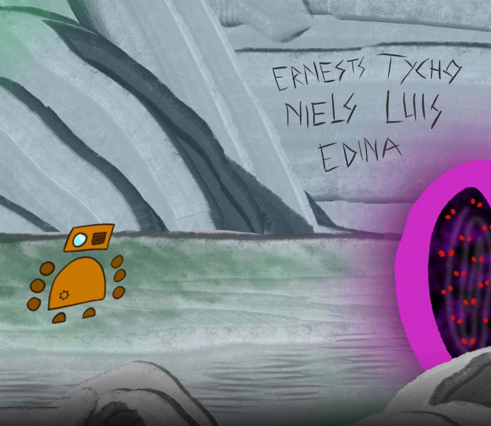

My contribution
I drew all the enemies in Photoshop and animated them in After Effects in every scene where they appeared.
This was a separate companion piece to the game, created with a five-person team for Creative Composition.
Mossaratus · Companion piece
An animated preview of Mossaratus, made for Creative Composition.
If the video does not load, watch it on YouTube.
I drew all the enemies in Photoshop and animated them in After Effects in every scene where they appeared.
This was a separate companion piece to the game, created with a five-person team for Creative Composition.
The enemy designs
I wanted the enemies to feel like a single chaotic wave, while still giving the individual creatures different shapes and shades of purple. Their colours stand apart from the mossy grey-green cave and the bronze robot.
In the animation, a simple sideways movement felt too still for the horde. I added a jelly-like wiggle and adapted the groupings for each scene: a long wave in the cave, smaller groups moving into the open space, and stacked layers for the fight.

Music: “Local Forecast - Elevator” by Kevin MacLeod (used with reverb; CC BY 4.0) and “Brutal Rock Logo” by DHcz, sourced from Pixabay. Sound effects include the team's own recordings and sounds from Freesound.